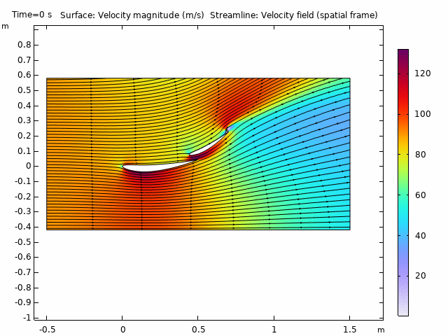
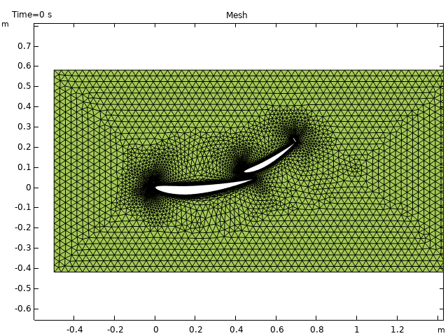

Project · DHIO Research & Engineering
Transient CFD study at DHIO Research and Engineering.
Download the full report (PDF)
A drag reduction system is a multi element wing whose upper element opens on demand to stall the wing and shed downforce. Modelling it properly means letting the geometry move during the solve, so I set up a transient, moving mesh CFD study that resolves the velocity field and streamlines as the flap rotates through its full range of motion.
The animation at the top shows the velocity magnitude and streamlines as the slot opens. The flow through the slot and the wake behind the wing reorganise completely between the closed and open states.

With the mesh motion and a time accurate solve in place, the study quantifies how much the aerodynamic load changes between the two states, which is the whole point of the device.